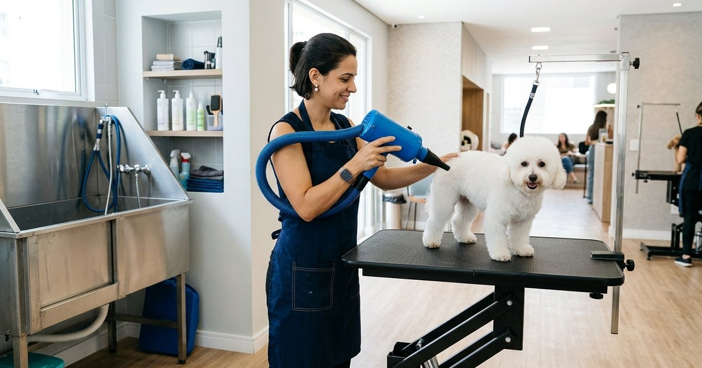
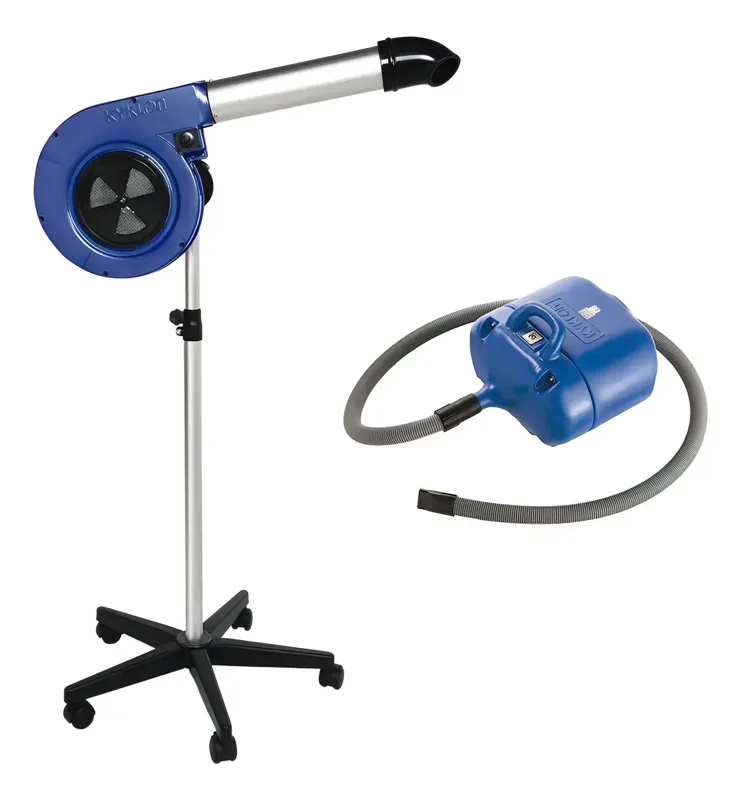
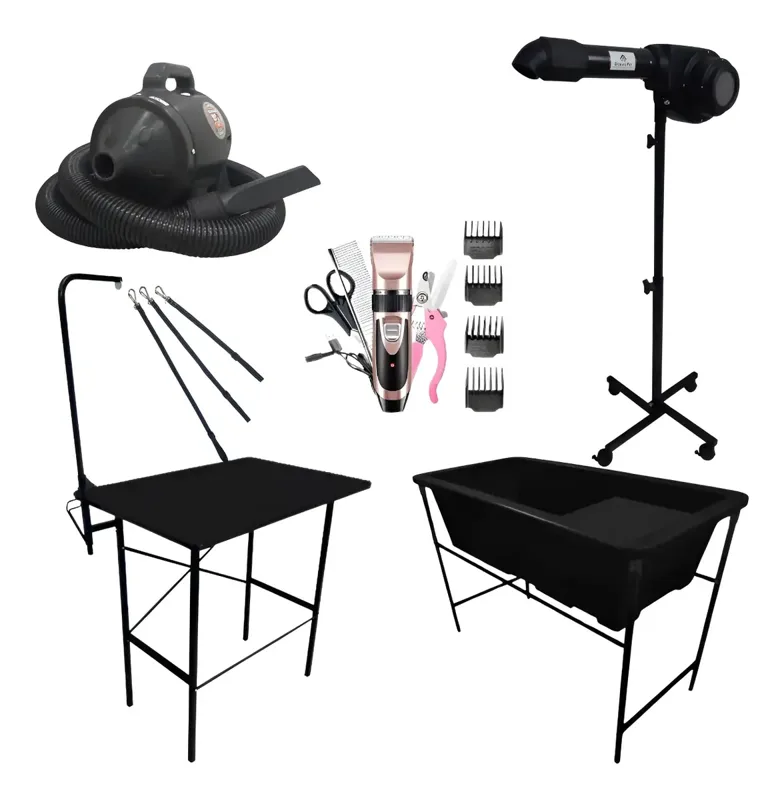
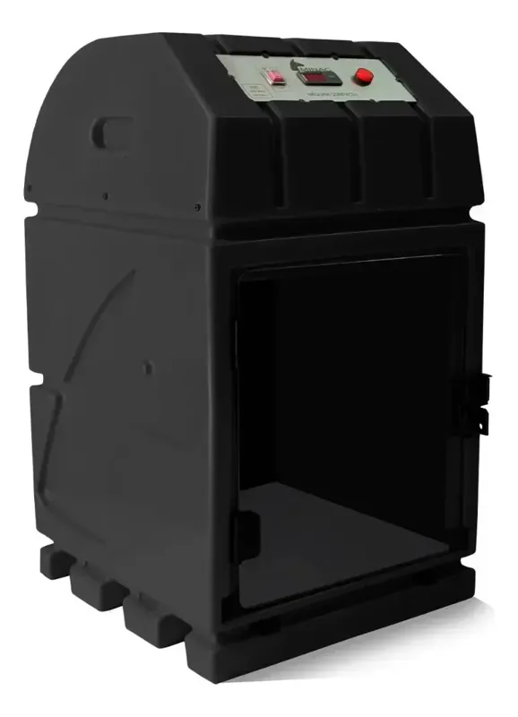
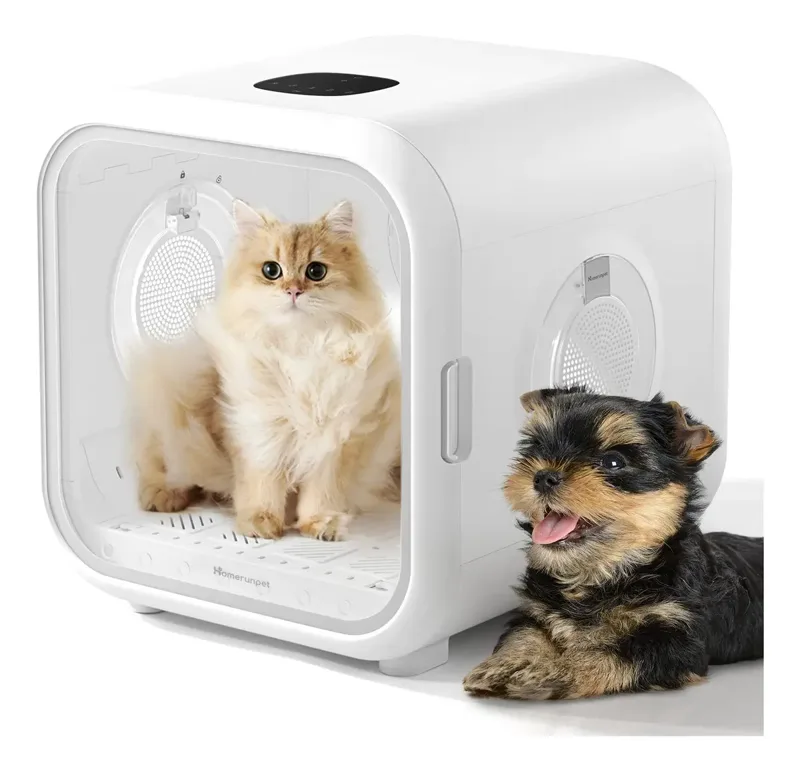

Melhor Secador para Pet Shop em 2026: Secador, Soprador e Máquina de Secar Comparados

Este post contém links de afiliado. Podemos receber uma comissão em compras feitas através deles, sem custo adicional para você.
No banho e tosa, a secagem é a etapa que mais toma tempo, e é ela que define quantos animais você atende por dia. Escolher o melhor secador para pet shop passa por três tipos de equipamento: o soprador, que tira o excesso de água; o secador de pedestal, que finaliza e alinha o pelo; e a máquina de secar, que trabalha sozinha enquanto o profissional cuida de outro animal. Comparamos quatro opções vendidas no Mercado Livre em 27/11/2026, todas com envio nacional, com ficha técnica, potência, voltagem e ruído.
Resposta curta: para um pet shop que já funciona, o kit Kyklon Maestro + Revolution (R$ 4.030) é a melhor compra: secador de 2.400 W com quatro temperaturas e soprador de dois motores, de marca nacional com ficha completa. Para montar um banho e tosa do zero, o kit com mesa e banheira (R$ 3.499, nota 4,7) traz o básico de uma vez. Para dar conta de mais animais por dia, a máquina de secar Minag libera o tosador.
Quer ver o preço agora? Kit Kyklon Maestro + Revolution no Mercado Livre, 10x sem juros e frete grátis.Link de afiliado — sem custo extra para você.
Ver preço no Mercado Livre →- Melhor para pet shop em funcionamento: Kit Kyklon Maestro + Revolution (R$ 4.030) Ver preço
- Melhor custo-benefício para começar: Kit secador + soprador + mesa + banheira (R$ 3.499, nota 4,7) Ver preço
- Para atender mais animais por dia: Máquina de secar Minag Compacta (R$ 5.539) Ver preço
- Para gatos e cães pequenos: Homerunpet Drybo Plus (R$ 4.900) Ver preço
Comparativo: 4 Equipamentos de Secagem para Pet Shop
Preços consultados no Mercado Livre em 27/11/2026, todos com frete grátis e envio a partir do Brasil. Preços sujeitos a alteração — confira o valor atual no botão.
| Equipamento | Tipo | Potência | Voltagem | Preço | |
|---|---|---|---|---|---|
| Kit Kyklon | Secador de pedestal + soprador | 2.400 W + 2.200 W | 127 V ou 220 V | R$ 4.030 | Ver preço |
| Kit Petshop completo | Secador + soprador + mesa + banheira | Confira no anúncio | Confira no anúncio | R$ 3.499 | Ver preço |
| Minag Compacta | Máquina de secar | Motor de 1.260 W | 127 V ou 220 V | R$ 5.539 | Ver preço |
| Drybo Plus | Cabine de secagem | 350 W | Não informada pelo fabricante | R$ 4.900 | Ver preço |
Secador, Soprador ou Máquina de Secar: Qual a Diferença
A própria Kyklon resume a divisão: o soprador serve "para remover o excesso de água e preparação da secagem", e o secador "para finalização da secagem, alinhamento e design dos pelos". Na prática, o soprador tem muito fluxo de ar e pouca ou nenhuma temperatura; o secador de pedestal tem ar morno e direcionável, e deixa as mãos do tosador livres para escovar.
A máquina (ou cabine) de secar é outra categoria: o animal fica dentro de uma câmara com ar circulando, e o profissional pode atender outro cliente enquanto isso. Ela não substitui a finalização com escova, mas encurta a parte mais demorada. Explicamos o soprador em detalhe no guia soprador pet: vale a pena?.
Os 4 Equipamentos, um a um
Como montamos a lista: não testamos os equipamentos. Analisamos as fichas técnicas publicadas pelos fabricantes e lojas oficiais e os anúncios do Mercado Livre (preço, parcelamento, frete e, quando visível, nota e vendas) em 27/11/2026. O que não encontramos aparece como "não informado pelo fabricante".
Kit Kyklon Secador Maestro + Soprador Revolution
Para quem é: pet shop que quer trocar ou completar o par secador e soprador com equipamento profissional nacional.

A Kyklon é uma marca brasileira de equipamentos para banho e tosa, e este kit junta os dois aparelhos que fazem o grosso do trabalho. O secador Maestro é de pedestal, com 2.400 W, vazão de ar de 349 m³/h e quatro temperaturas (ambiente, morno, médio e quente, de 36 a 57 °C). Um regulador triplo ajusta temperatura, ruído e fluxo de ar, e o duto e o pedestal são de alumínio. O fabricante declara 78 dB e 11 kg.
O soprador Revolution tem dois motores, 2.200 W, duas velocidades e mangueira de 3 m, com corpo de polímero rotomoldado. Pesa 7,9 kg e emite 72 dB, segundo a Kyklon. É o aparelho que tira a água pesada de cães de pelagem densa antes de ir para o secador.
Dois cuidados antes de comprar. Os dois aparelhos são 127 V ou 220 V, não bivolt: escolha a versão certa no anúncio. E somam 4.600 W; ligados ao mesmo tempo numa tomada de 127 V, puxam cerca de 36 A, mais do que um circuito comum aguenta. Peça a um eletricista para conferir a instalação. A garantia não está na página do fabricante (fica no manual), então confirme com o vendedor.
| Preço | R$ 4.030 em 27/11/2026, 10x de R$ 403 sem juros, frete grátis |
|---|---|
| Secador Maestro | 2.400 W; 349 m³/h; 4 temperaturas, 36 a 57 °C; 78 dB; 11 kg; 85,5 x 145 x 65,3 cm |
| Soprador Revolution | 2.200 W; 2 motores; 2 velocidades; mangueira de 3 m; 72 dB; 7,9 kg; 43 x 35 x 54,1 cm |
| Voltagem | 127 V ou 220 V (não é bivolt) |
| Materiais | Secador: carcaça de polipropileno, duto e pedestal de alumínio. Soprador: polímero rotomoldado |
| Garantia | Não informada na página do fabricante |
| Origem | Nacional |
| Avaliações | Não exibidas na página de afiliado consultada |
- Ficha técnica completa e marca nacional especializada
- Secador com 4 temperaturas e vazão de 349 m³/h
- Soprador de 2 motores com mangueira de 3 m
- 10x sem juros
- Não é bivolt: escolha a voltagem certa
- 4.600 W somados pedem instalação elétrica adequada
- 78 dB no secador: barulhento para animais sensíveis
🌀 Kit Kyklon Maestro + Revolution: veja o preço atual no Mercado Livre.
Ver preço atual no Mercado LivreKit Petshop: Secador + Soprador + Mesa de Tosa + Banheira
Para quem é: quem está montando um banho e tosa, em casa ou num ponto pequeno, e quer o mobiliário e os aparelhos numa compra só.

Este é o único item da lista que resolve a estrutura inteira. Pela foto do anúncio, o kit traz soprador com mangueira, secador de pedestal, mesa de tosa com haste para a guia e banheira elevada, além de acessórios de tosa. É também o mais bem avaliado entre os que tinham nota visível: 4,7 no Mercado Livre, com mais de 100 vendidos.
A troca é a informação. É um kit de vendedor, sem marca de fabricante conhecida, e não encontramos ficha técnica fora do Mercado Livre. Por isso não informamos potência, voltagem, medidas da mesa nem garantia: confira cada item no anúncio antes de fechar, principalmente a voltagem dos aparelhos e o tamanho da banheira em relação aos cães que você atende.
Como referência de preço: o kit custa R$ 531 a menos que só o par Kyklon e ainda inclui mesa e banheira. Para quem está começando e ainda vai descobrir o volume de clientes, faz sentido começar por ele e subir de nível no secador depois.
| Preço | R$ 3.499 em 27/11/2026, 10x de R$ 349,90 sem juros, frete grátis |
|---|---|
| Conteúdo | Secador, soprador, mesa de tosa e banheira (GD), conforme título e foto do anúncio |
| Potência e voltagem | Confira no anúncio (não coletadas) |
| Garantia | Confira no anúncio |
| Origem | Nacional |
| Avaliações | 4,7 de 5 no Mercado Livre; +100 vendidos |
- Estrutura completa numa compra só
- Nota 4,7 com mais de 100 vendas
- O menor preço da lista, 10x sem juros
- Sem marca e sem ficha técnica pública
- Potência e voltagem precisam ser conferidas no anúncio
- Aparelhos de entrada: podem não aguentar alto volume diário
🛁 Kit Petshop completo: veja o preço atual no Mercado Livre.
Ver preço atual no Mercado LivreMáquina de Secar Pets Minag Compacta
Para quem é: pet shop com fila de clientes, em que a secagem virou gargalo.

A Minag é fabricante nacional de equipamentos para banho e tosa, e a Compacta é a sua máquina de secar de menor porte. O animal entra numa câmara de 55 x 50 x 50 cm, com porta de vidro temperado, e o ar é movido por um motor WEG de 1.260 W. Por fora, ocupa 98 x 57 x 60 cm. O corpo é de polímero de média densidade com painel de inox, e a loja oficial informa certificação Inmetro (Portaria 148/2022).
O ganho é de tempo: enquanto um cão seca na máquina, o tosador banha ou finaliza outro. Com um tosador só, isso pode significar atender mais animais no mesmo dia. A operação, segundo a Minag, é simples: liga e desliga num botão.
O que falta na ficha: faixa de temperatura, timer, ruído, peso, porte máximo do animal e garantia não aparecem na loja oficial. A câmara de 55 x 50 x 50 cm limita o uso a cães pequenos e médios. E, como em toda máquina de secar, o animal precisa de supervisão o tempo todo, com atenção redobrada a raças braquicefálicas (pug, buldogue, shih-tzu), que lidam pior com calor.
| Preço | R$ 5.539 (de R$ 5.890) em 27/11/2026, 10x de R$ 554 sem juros, frete grátis |
|---|---|
| Medidas | Externas 98 x 57 x 60 cm; câmara interna 55 x 50 x 50 cm |
| Motor | WEG, 1.260 W |
| Voltagem | 127 V ou 220 V |
| Materiais | Polímero de média densidade, painel de inox, porta de vidro temperado |
| Certificação | Inmetro, Portaria 148/2022 |
| Temperatura, timer e ruído | Não informados pelo fabricante |
| Garantia | Não informada na loja oficial |
| Origem | Nacional |
- Libera o tosador durante a secagem
- Fabricante nacional, motor WEG e certificação Inmetro
- Desconto de R$ 351 na Black Friday, 10x sem juros
- O mais caro da lista
- Sem faixa de temperatura, timer e garantia na ficha
- Câmara só para cães pequenos e médios; exige supervisão
⏱️ Máquina de secar Minag Compacta: veja o preço atual no Mercado Livre.
Ver preço atual no Mercado LivreHomerunpet Drybo Plus (cabine de secagem automática)
Para quem é: gatil, groomer de gatos ou tutor que dá banho em casa em gatos e cães pequenos.

A Drybo Plus é uma caixa de secagem doméstica, bem diferente dos aparelhos profissionais acima. A câmara tem 50 litros (41,5 x 33,8 x 36 cm por dentro), e o fabricante diz que cabem dois gatos de até 5 kg ou um Maine Coon de 9 kg. A potência média é de 350 W, a temperatura vai até 40 °C com precisão de ±1 °C, e há modo frio e íons negativos.
O ponto a favor é o porte: 47 x 42 x 43,5 cm e 8,8 kg, cabe numa bancada e não exige instalação elétrica especial. Para quem atende gatos, que costumam tolerar mal o barulho do soprador, uma cabine fechada e de baixa potência pode ser a saída.
Os pontos contra pesam para um pet shop: só serve para animais pequenos, a 350 W seca mais devagar que um equipamento profissional, e a ficha do fabricante é confusa no ruído (menos de 20 dB numa tabela, 40 dB nos destaques e "40 a 60 dB" no FAQ). A voltagem não é informada no site da Homerunpet, que é americano; confirme com o vendedor se a unidade é 127 V ou 220 V. Garantia de 12 meses no site do fabricante.
| Preço | R$ 4.900 em 27/11/2026, 10x de R$ 490 sem juros, frete grátis |
|---|---|
| Modelo | PD50 |
| Medidas | Externas 47 x 42 x 43,5 cm; internas 41,5 x 33,8 x 36 cm (50 L) |
| Peso | 8,8 kg |
| Capacidade | Dois gatos de até 5 kg ou um gato de 9 kg |
| Potência | 350 W (média) |
| Temperatura | Até 40 °C, ±1 °C; modo quente e frio |
| Ruído | Informação conflitante no site (menos de 20 dB a 60 dB) |
| Voltagem | Não informada pelo fabricante |
| Garantia | 12 meses (site do fabricante) |
| Origem | Envio nacional |
- Compacta e de baixo consumo (350 W)
- Temperatura controlada até 40 °C, com modo frio
- Boa opção para gatos que não toleram soprador
- Só animais pequenos; secagem mais lenta
- Ruído e voltagem mal informados pelo fabricante
- Caro para o que entrega num pet shop
🐈 Homerunpet Drybo Plus: veja o preço atual no Mercado Livre.
Ver preço atual no Mercado LivreGuia de Compra: Como Escolher o Secador para Pet Shop
1. Volume de atendimentos
Poucos banhos por dia: secador de pedestal e soprador resolvem. Fila de clientes e um só tosador: a máquina de secar começa a se pagar, porque trabalha em paralelo. Pet shop grande costuma ter os três.
2. Voltagem: 127 V ou 220 V
Equipamentos profissionais de secagem geralmente não são bivolt. Os da Kyklon e a máquina Minag são vendidos em versão 127 V ou 220 V, e você escolhe no anúncio. Se o seu ponto tem 220 V disponível, prefira: com a mesma potência, a corrente cai quase pela metade, o que alivia a fiação e os disjuntores.
3. Potência e instalação elétrica
Some a potência de tudo que pode ficar ligado ao mesmo tempo. Secador (2.400 W) e soprador (2.200 W) da Kyklon juntos chegam a 4.600 W: em 127 V, cerca de 36 A; em 220 V, cerca de 21 A. É muito para uma tomada comum. Um eletricista deve dimensionar circuitos separados.
4. Ruído
A Kyklon declara 78 dB no secador e 72 dB no soprador. Para animais medrosos e gatos, use a menor velocidade no começo e mantenha o bico longe de orelhas e rosto. Cabines fechadas, como a Drybo, são alternativa para gatos.
5. Segurança do animal
Nunca deixe um animal sem supervisão em máquina ou cabine de secagem, e redobre a atenção com cães braquicefálicos, idosos e cardiopatas, mais sensíveis ao calor. Teste a temperatura do ar na sua mão antes de apontar para o animal. Respeite os limites de porte de cada câmara.
6. Garantia e assistência
Nenhum dos fabricantes informa a garantia na página do produto, exceto a Homerunpet (12 meses, no site americano). Marcas nacionais como Kyklon e Minag têm a vantagem de peças e assistência no Brasil; antes de comprar, confirme com o vendedor o prazo e onde é feita a assistência.
Comparativos Diretos
Kit Kyklon vs kit Petshop completo
| Kit Kyklon | Kit Petshop completo | |
|---|---|---|
| Preço (27/11) | R$ 4.030 | R$ 3.499 |
| Inclui | Secador de pedestal + soprador | Secador + soprador + mesa + banheira |
| Ficha técnica | Completa (fabricante) | Só no anúncio |
| Avaliação visível | Não | 4,7, +100 vendidos |
Veredito: quem já tem mesa e banheira e quer aparelhos para uso intenso deve ir de Kyklon. Quem está começando do zero economiza com o kit completo e pode trocar o secador quando o movimento crescer.
Máquina Minag vs Drybo Plus
As duas secam com o animal dentro de uma câmara, mas para públicos diferentes. A Minag é profissional, com câmara de 55 x 50 x 50 cm e motor de 1.260 W, para cães pequenos e médios num pet shop. A Drybo é doméstica, com 50 L e 350 W, para gatos e cães pequenos. Para pet shop, a Minag; para gatil ou casa, a Drybo.
Perguntas Frequentes
Qual a diferença entre secador e soprador pet?
O soprador tem muito fluxo de ar e serve para tirar o excesso de água logo depois do banho. O secador, geralmente de pedestal, tem ar morno direcionável e serve para finalizar, alinhar e modelar o pelo enquanto o tosador escova. Num pet shop, os dois trabalham em sequência: primeiro o soprador, depois o secador.
Qual o melhor secador para pet shop?
Entre as opções que comparamos em 27/11/2026, o kit Kyklon com secador Maestro (2.400 W, quatro temperaturas) e soprador Revolution (dois motores) é a melhor compra para pet shop em funcionamento, por R$ 4.030. Para montar a estrutura do zero, o kit com mesa e banheira sai por R$ 3.499.
Secador pet: 110 V ou 220 V?
Se o seu ponto tem 220 V, prefira essa versão: para a mesma potência, a corrente cai quase pela metade, o que alivia fiação e disjuntores. Equipamentos profissionais como os da Kyklon e da Minag não são bivolt, então escolha a voltagem certa no anúncio e não use adaptador.
Máquina de secar cachorro é segura?
É segura quando usada com supervisão constante e dentro do porte indicado. O animal não deve ficar sozinho na câmara, e cães braquicefálicos, idosos ou cardiopatas exigem atenção redobrada ao calor. Prefira máquinas com certificação Inmetro, como a Minag Compacta, e confira a temperatura antes de usar.
Quanto custa montar um banho e tosa?
Só em equipamentos de secagem, os preços que levantamos em 27/11/2026 vão de R$ 3.499, num kit com secador, soprador, mesa e banheira, a R$ 5.539, numa máquina de secar profissional. Some produtos de banho, tesouras, máquina de tosa, adequação elétrica e hidráulica, e custos do ponto.
Quantos watts deve ter um secador profissional para pet?
Os secadores e sopradores profissionais que analisamos ficam acima de 2.000 W: o secador Kyklon Maestro tem 2.400 W e o soprador Revolution 2.200 W. Mais importante que a potência isolada é a vazão de ar e o controle de temperatura. O Maestro, por exemplo, tem 349 m³/h e quatro temperaturas.
Conclusão: Qual Comprar
- Pet shop em funcionamento, trocando ou completando o par: kit Kyklon Maestro + Revolution.
- Montando o banho e tosa do zero: kit com secador, soprador, mesa e banheira.
- Fila de clientes e secagem como gargalo: máquina de secar Minag Compacta.
- Gatos e cães pequenos, em gatil ou em casa: Homerunpet Drybo Plus.
Os preços acima são da semana de Black Friday; a Minag estava com R$ 351 de desconto sobre o preço anterior do anúncio. Para outros equipamentos premium, veja o guia de produtos pet premium que valem o investimento, a melhor caixa de areia automática, os equipamentos premium para aquário e os produtos pet de alto padrão.
Veja nossa política editorial e como verificamos as fontes citadas neste artigo. Fichas técnicas: Kyklon Maestro, Kyklon Revolution, loja oficial Minag e site da Homerunpet, consultados em 27/11/2026.
🐾 Kit Kyklon Maestro + Revolution: o par profissional para o seu pet shop.
Ver preço atual no Mercado LivreLink de afiliado: podemos receber uma comissão por compras feitas através deste link, sem custo adicional para você. Preços sujeitos a alteração — confira o valor atual no botão.